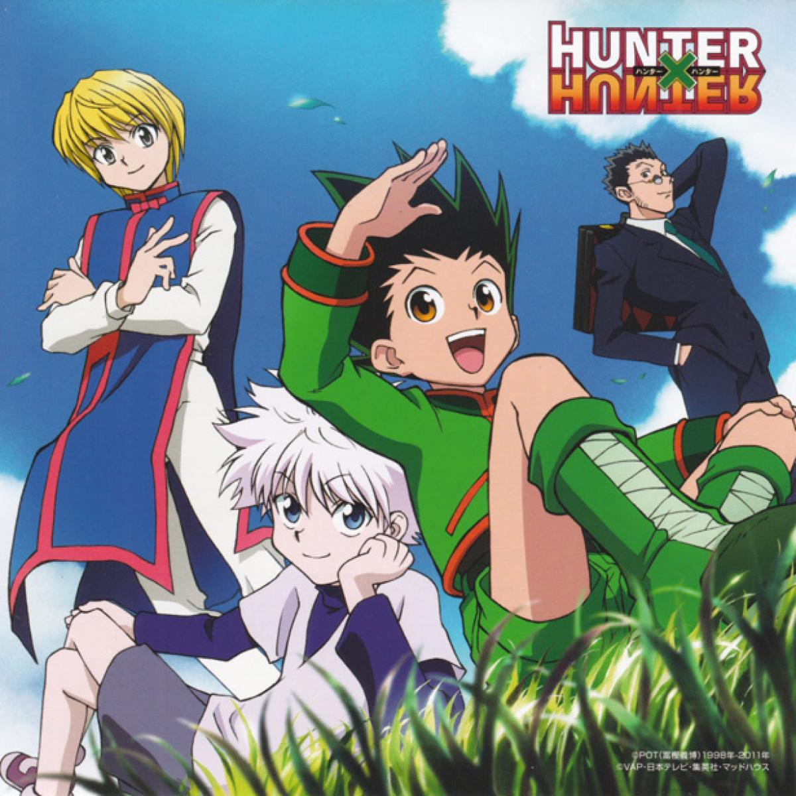

Esta es la primera página web que diseño y subo a Internet , por ello es algo arcaica.
Compartire mis gustos y opiniones.
Comenzaré diciendo que soy fanática de las Ciencias y estudio Ingeniería de Telecomunicaciones en la Universidad Nacional de Ingeniería (UNI)
Más sobre mi
Soy una chica de gustos muy variados, tengo una fascinación única por todo lo relacionado a la ciencia y tecnología, me emociona mucho aprender más y más
Me gusta mucho el manga y uno de mis favoritos es HunterxHunter de Yoshihiro Togashi
Recomendaciones musicales
Les recomiendo escuchar esta canción y seguir el canal MSL , me encantan sus canciones .